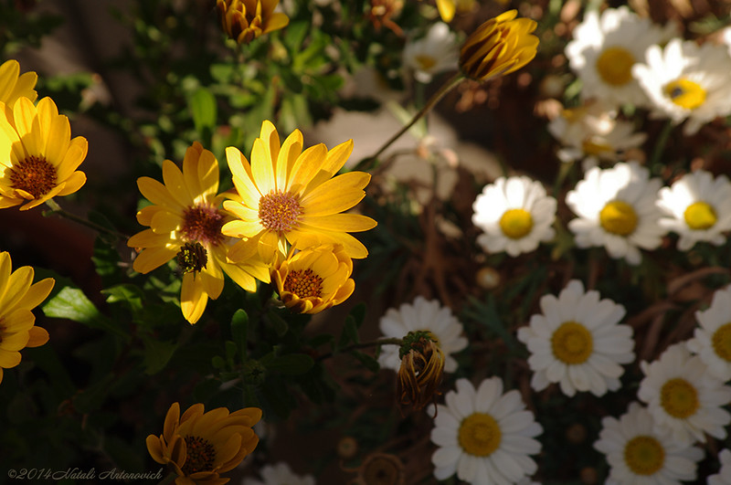
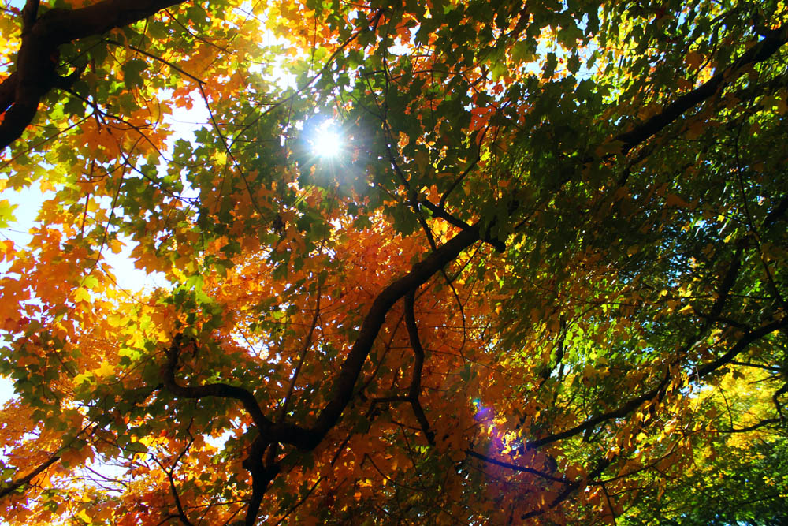

Jeffrey Fairbanks is the owner and creator of Sustainable Gardens
Jeff began Sustainable Gardens in 2005 after completing a Master Gardener's certification
course at the University of Arizona
Born on a small farm in East Washington, Jeff has always been an experienced farmer and gardener
Experienced in business management, Jeff began Sustainable Gardens with the goal to bring
sustainable and edible landscapes to the Arizona community
Jeff enjoys spending time with his family and watching classic musicals like
Seven Brides for Seven Brothers and Pete's Dragon
Michael Fairbanks is the head Landscape Technician and responsible for the
majority of landscape mantainance and installation
Michael is a current student at Arizona State University and is studying
criminal justice
Michael has years of experience in both lawn care and general landscape clean-up
Michael is an extreme movie buff and enjoyes bingeing various Netflix shows
Michael is currently preparing to serve a mission in Puerto Rico for two years
Wesley Fairbanks is both the accountant and Irrigation Expert of Sustainable Gardens
Wesley began working at Sustainable Gardens in 2012
Wesley is a student at Brigham Young University and is studying Computer Science
Wesley enjoys spending time with his wife and coding in his freetime.
Wesley is a massive fan of movies and TV shows and can often be found watching shows and
movies late into the night
Sustainable Gardens is a family run and operated business and our commitment is that we will always give the best and most cost effective solutions to your landscaping needs.
Contact us! Call (602) 534-5678 or talk to us online by emailing sustainablegardens.az@gmail.com.